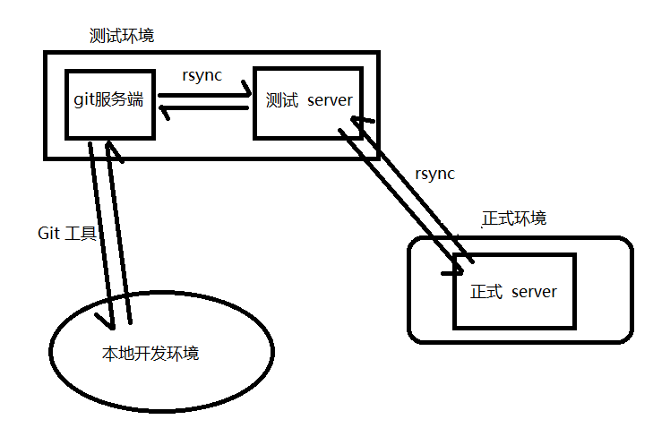
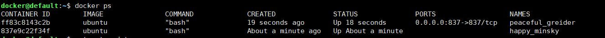
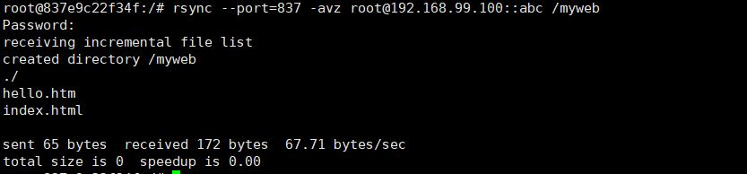
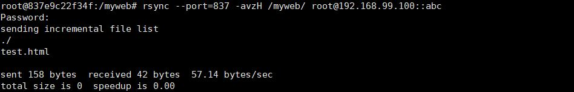

对于phper来说部署项目和更新项目是很方便的，只要直接将写好的项目覆盖到项目的根目录就可以啦。但是平时项目开发的时候肯定不是只部署一个环境，一般是三套环境（开发环境、测试环境、生产环境），我们每次在开发环境开发完之后要将项目更新到测试环境和生产环境上，如果每次更新的话都是将项目复制然后手动的去覆盖到项目的根目录下的话就太麻烦啦，而且也容易出错所以我们应该有一套项目管理系统来方便的管理项目的更新迭代，大致结构如下：

画的不好但是意思是对的，这样的话就可以通过一个脚本文件直接更新代码啦，更重要的是我们可以通过php中的 exec() 函数来操作脚本，这意味着我们可以使用php来开发这个项目管理平台，今天只说如何配置rsync。
实验环境：
docker（ubuntu镜像）实例化两台虚拟器

在两台虚拟机上都安装好 rsync 工具，rsync 使用分两种情况，一种是客户端使用（直接执行 rsync 相关命令）另一种是服务器端使用（以daemon模式执行）
配置 rsync 服务端
首先要在 `/etc` 目录下手动添加个 rsyncd.conf 文件并填写相关配置，配置选项解释如下：
port=837 #监听端口默认 873
log file=/var/log/rsync.log #rsync日志
pid file=/var/run/rsync.pid #rsync运行时生成的pid存放目录
[abc] #模块名称
path=/var/www/html #模块对应的目录
use chroot=yes #是否限定为模块默认目录
max nonections=4 #指定最大可以连接的客户端数
read only=no #yes 为改模块内容只允许读，no 为该模块允许读写
list=yes #是否允许 使用 `rsync ip地址::` 列出模块名
uid=root #以哪个用户的身份来传输
gid=root #以哪个组的身份来传输
auth users=root #指定验证用户名，如果不设置则可以不用密码进行传输
secrets file=/etc/rsync.passwd #指定用户名和密码的存放文件 注：文件需要以 "用户名:密码"的形式存储 并且需要设置权限 chmod 600 rsync.passwd从客户端读取服务器端文件
rsync --port=837 -avz root@192.168.99.100::abc /myweb
这时会将服务端 /var/www/html 目录下的文件同步到 客户端的 /web 目录下
从客户端推送文件到服务端
rsync --port=837 -avzH /myweb/ root@192.168.99.100::abc
这时会将客户端的 /web 目录下的文件同步到 服务端 /var/www/html 目录下
对于 rsync 命令各个选项的含义 建议看下这篇文章吧，这哥们写的翻译的挺详细的 @骏马金龙 man rsync翻译(rsync命令中文手册)